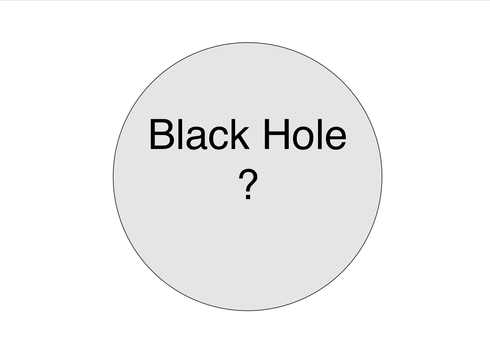

We used a non-parametric model, Autoregressive Process (AR), to analyze the gravitational wave power spectrum of galactic Double-White-Dwarfs (DWDs), that will be observed by the Laser Interferometer Space Antenna (LISA).
The AR model is integrated into a Bayesian inference pipline for LISA, and could potentially recover more structures of the power spectrum.
We calculated depolarization ratios for peaks in the vibrational spectrum for Benzene and chromium hexacarbonyl that are enhanced by resonance with a forbidden resonant
electronic state. Accurate calculation of depolarization ratios could help to check the assumptions from vibronic coupling and
further our understanding for electronic structure of the transition-metal carbonyls.

For horizonless exotic compact object, the gravitational wave
that falls towards it will reflect off the inner surface of the compact object and produce
quasiperiodic echoes in the GW signal in time-domain. Precise measurements of post-merger GW echoes can reveal
Planck-scale deviations from general relativity near the event horizon and provide more evidence to not quite black holes. Our group developed a Bayesian algorithm to detect the resonance structure of the echoes
in the frequency domain, in a rather model-independent way.
I studied planetary orbits around a binary star on 2D plane. Simulations of orbits of three astrophysical objects using Velocity Verlet algorithm are presented,
along with comparison with other algorithms like fourth order Runge-Kutta for energy conservation. Certain stable and unstable solutions of the restricted three-body system are determined.